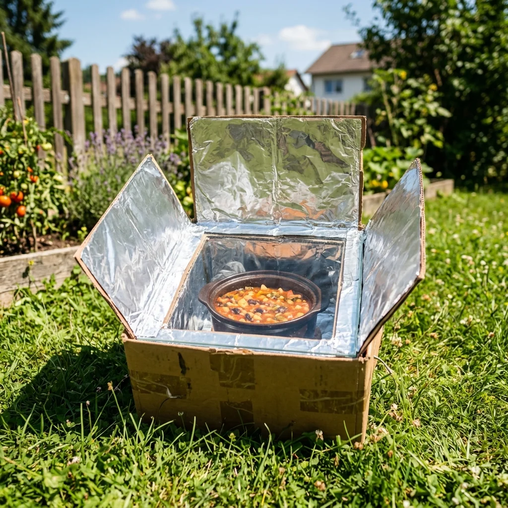
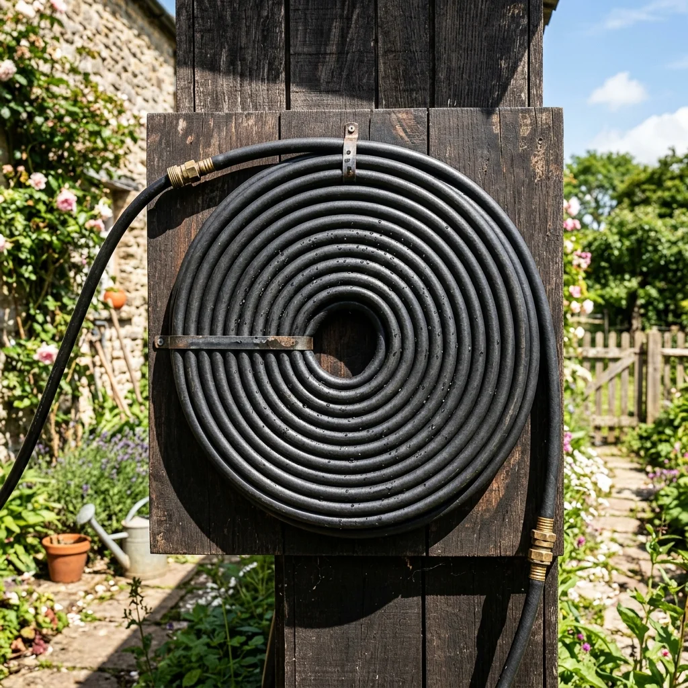
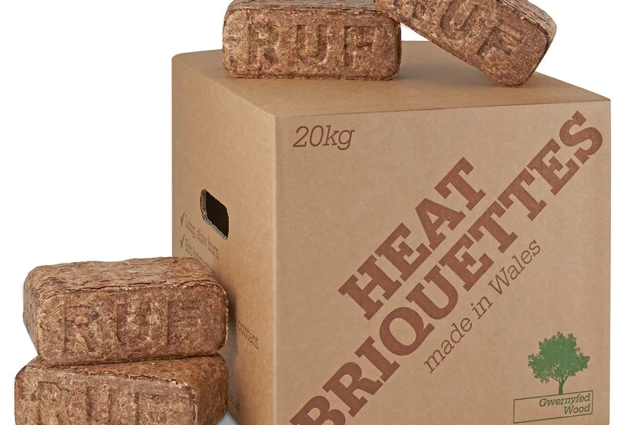

Loading ancestral wisdom...
Artículos Recomendados

Heating 55KPortable Cardboard Box Solar Oven
Build an ecological oven that cooks food reaching 120°C using two cardboard boxes, aluminum foil and glass.

Heating 40KSolar Water Heater with Black Hose
Build a thermophonic system to heat water for domestic use or an outdoor shower using a black spiral polyethylene hose.

Heating 18,5KFuel Briquette Paper Press
Recycle newspapers, old cardboard and sawdust to make compact, high-density, long-lasting briquettes for your fireplace or stove.
Comentarios y Experiencias